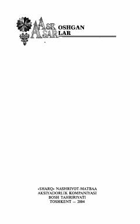

NAlisher Navoiyning hayoti va ijodiy yo'liga bag'ishlangan mashhur tarixiy roman.
Oybekning «Navoiy» romani buyuk shoir va mutafakkir Alisher Navoiyning hayoti hamda murakkab davri haqida hikoya qiladi. Asarda XV asrdagi Hirot muhiti, tolibi ilmlar va saroy hayoti, ijtimoiy-siyosiy voqealar yorqin badiiy bo'yoqlarda tasvirlangan.